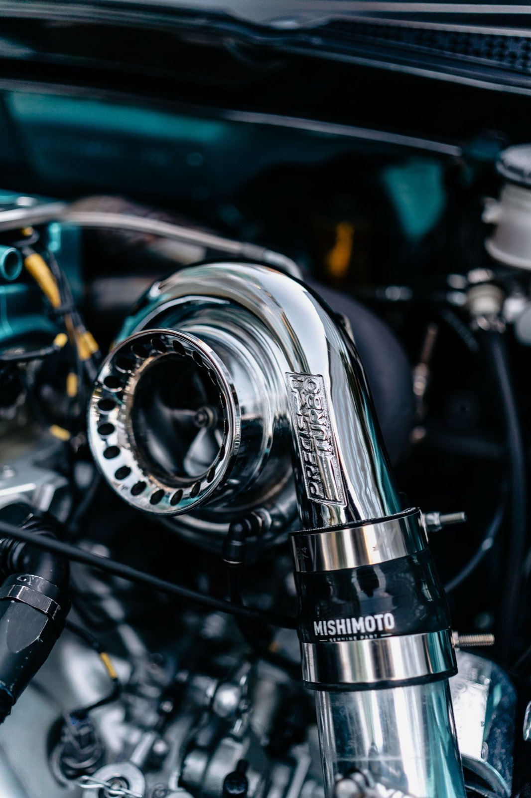
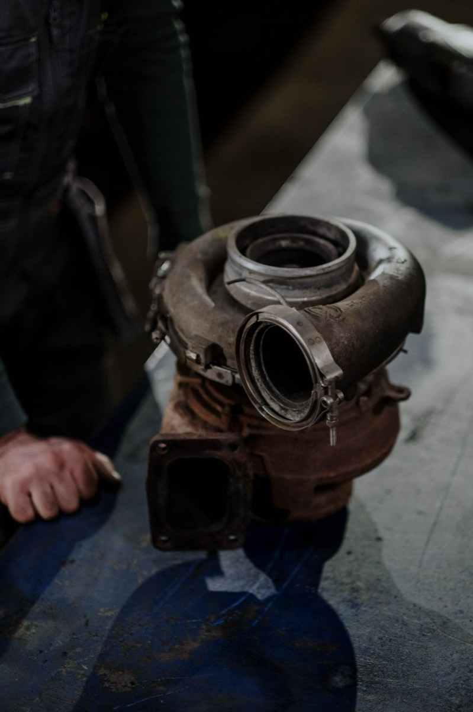
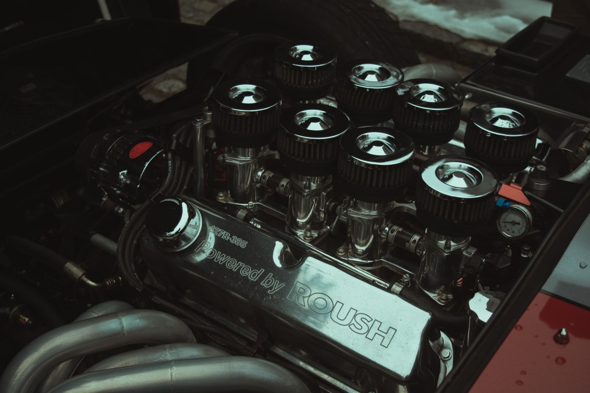

Cold Air Intake on the 2.7L TurboMax Silverado: Noise, Power, or Neither?
A cold air intake is the second thing most people buy after a leveling kit, and it's the modification with the widest gap between what marketing claims and what owners actually feel. The 2026 Silverado 1500 runs the 2.7L turbocharged four-cylinder, the TurboMax, rated at 310 hp and 430 lb-ft per KBB

A cold air intake is the second thing most people buy after a leveling kit, and it’s the modification with the widest gap between what marketing claims and what owners actually feel.
The 2026 Silverado 1500 runs the 2.7L turbocharged four-cylinder, the TurboMax, rated at 310 hp and 430 lb-ft per KBB’s 2026 listing. It’s a genuinely interesting engine: more torque than the old 4.3L V6 it replaced, and more low-end twist than you’d expect from a four. That turbocharger is also the reason an intake behaves differently on this truck than on a naturally aspirated 5.3L.
What an intake can and cannot do
Let’s separate the mechanisms, because “adds 15 hp” collapses three different things into one number.
Where an intake can help: A stock airbox is designed for noise reduction first, flow second: the intake resonator silencers and the box’s sound baffling add restriction. On a turbocharged engine, reducing pre-turbo restriction can let the turbo spool marginally faster, which you feel as slightly quicker tip-in rather than peak power. There’s a real if modest improvement available here, more so on a turbo engine than an NA one.
Where it can’t: The mass airflow sensor, throttle body, and ECU calibration remain the bottlenecks. A bolt-on intake cannot change the ECU’s boost targets. The engine management will trim around whatever extra air arrives and hold its commanded power. If you don’t change the tune, you mostly change the sound.
What you actually get: Induction noise on throttle. On a turbo four, that’s a noticeable whoosh-and-flutter charater that’s more dramatic than the power gain. Plenty of owners buy an intake purely for that and are happy, which is a legitimate reason. Just don’t tell yourself it’s a performance build.

Two Failure Modes Worth Knowing
1. Oiled filter media and the MAF. Many aftermarket intakes use oiled cotton-gauze filters. Over-oiling is the classic failure mode: oil migrates downstream, coats the mass airflow sensor’s hot wire, and produces rough idle, lean codes, and eventually a P0171. If you go oiled, use less oil than the instructions suggest and clean the MAF with proper MAF cleaner — never brake clean — when you service the filter.
2. Heat soak and true “cold air.” Half of what’s sold as a cold air intake pulls from inside the engine bay. On a truck that idles in traffic or works in summer heat, intake air temperature climbs and the ECU pulls timing. A sealed box that draws from the factory fender location is often better than an open cone with a heat shield. Look at where the filter actually draws from, not at the brand name.

Realistic expectations on the 2.7L
Our position: no dyno figures are published here, because no instrumented before/after test was run. What follows is what the mechanism supports and what owners consistently report across public forums.
- Expect a noticeable change in sound, especially under load and during spool.
- Expect little to no seat-of-the-pants power change without a tune. If someone tells you they felt 20 hp, ask if they also installed a tune at the same time. They usually did.
- Expect a possible small efficiency gain if the factory box was genuinely restrictive, and roughly nothing if it wasn’t. Modern OEM intakes on turbo engines are better than the aftermarket wants you to believe.

Where the money is better spent first
If your goal is actual performance on this engine, the intake is near the bottom of the list. In rough order of return per dollar on a 2.7L TurboMax:
- A tune. This is the only thing that changes boost targets and shift logic. It’s also the modification most likely to affect your warranty. Understand that before you do it.
- Tires. On a 4x4 truck that’s mostly your contact patch, and the factory all-seasons are a compromise.
- Weight reduction. Free, and a light bed makes a measurable difference on a 5,000 lb truck.
- Intake and exhaust. Sound and character, plus a small real gain once tuned.
The short version
Buy an intake on this truck for the induction noise, and know that’s what you’re buying. It’s a fine purchase for that reason.
Don’t buy it expecting a power gain you’ll feel, and don’t buy an open-cone design that breathes hot engine-bay air in July traffic. Sealed box, factory fender draw, lightly-oiled filter, MAF cleaned at every service. That’s the version of this modification that doesn’t cost you a sensor and a Saturday re-diagnosing a lean code.
Comments
No account needed. A name is enough.